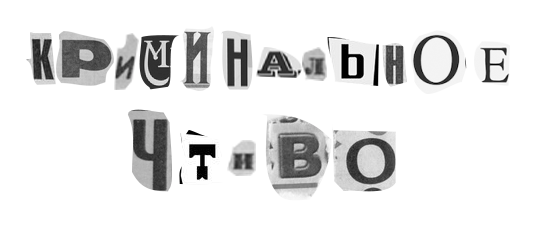

ТРУ-КРАЙМ - жанр нехудожественной литературы, подкастов и фильмов, в котором автор исследует преступление и описывает действия людей, связанных с криминальными событиями и пострадавших от них. Рассказчик делится фактами, выдвигает гипотезы о произошедшем и комментирует мотивы преступников.
Изучение и анализ преступлений и их расследований помогает нам ощутить контроль над миром, даже если мы не можем непосредственно влиять на эти события.
Это дает нам чувство уверенности и безопасности – мы как будто бы узнаем, как совершаются преступления и убийства. Тогда появляется некая иллюзия, что в реальной жизни получится избежать угрозы. Например, с помощью криминальных фильмов можно задуматься, как защитить себя в случае нападения или распознать в человеке скрытого преступника.